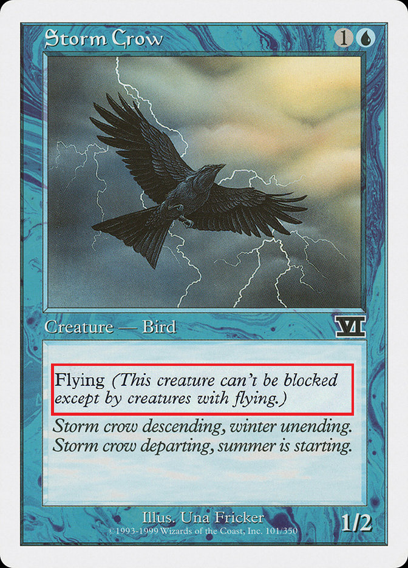
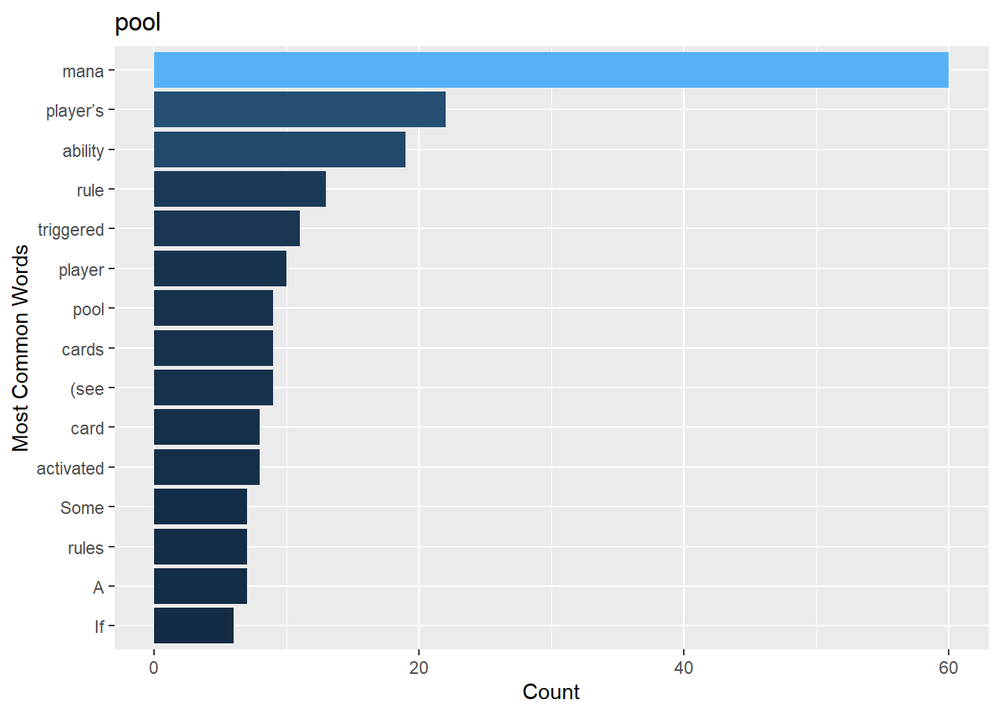
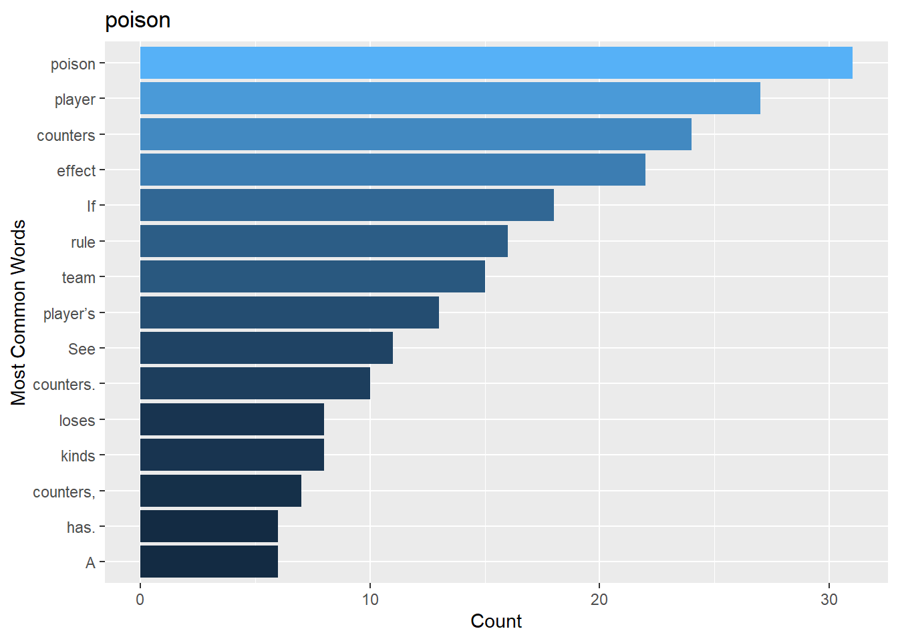
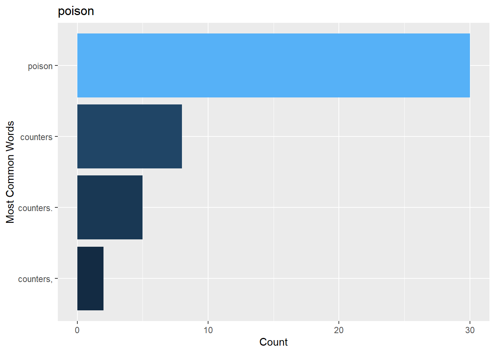
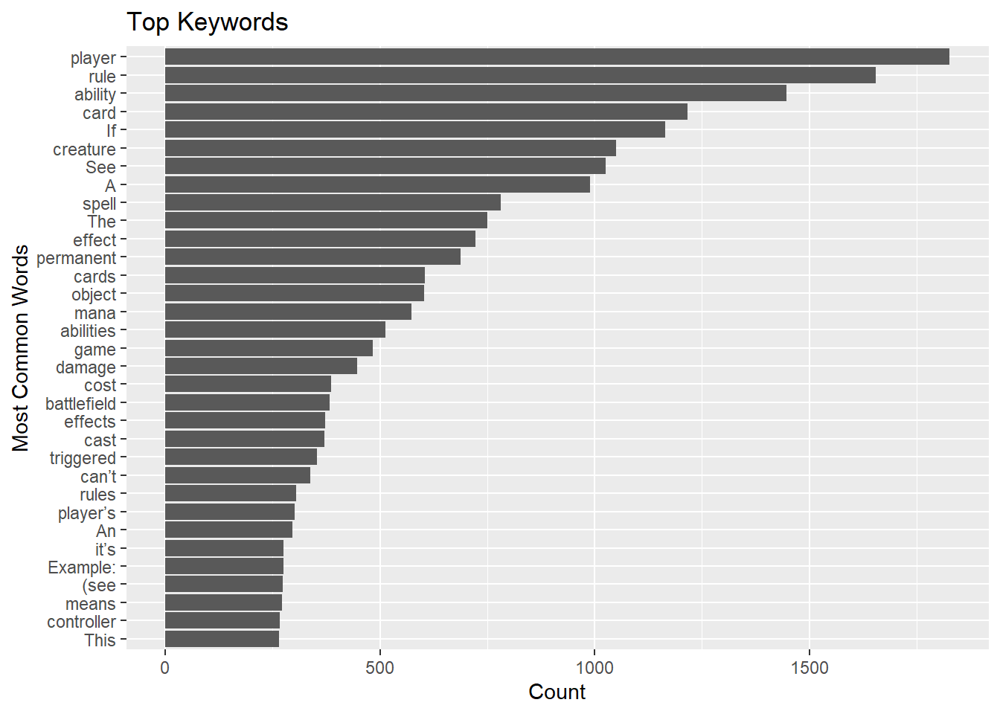

Rows: 84,237
Columns: 2
Groups: word [12,689]
$ word <chr> "Magic:", "The", "Gathering", "Comprehensive", "Rules", "Th…
$ word_count <int> 15, 750, 11, 5, 24, 84, 305, 2, 3, 5, 2, 1, 265, 2, 1, 1, 1…Project 2
Abstract
I want to make a visualization of quantity and correlation through an interactive search method for the MTG rulings.
Introduction
Magic the Gathering is a children’s card game. You play cards according to costs in order to win. In order to conserve text space, rules on cards are shortened to keywords. All of these keywords are defined in the official rules book.

However, there’s a problem. Magic the Gathering has been running since 1994, and at this point the MTG rulebook is about 250 pages. Understanding the rules completely is very difficult even for experienced players.
The goal of this project is to make a tool that will display trends and patterns in the rules, to better understand what mechanics in the rules are correlated.
Topic of Research
The goal of my project is to make an application visualizing quantity and correlation through an interactive search method for the MTG rulings. Once a keyword is chosen, the application will give:
A list of sections in the rules that the keyword resides.
A graph of some number of keywords close in proximity to the searched keyword.
The Data
The data consists of the scraped text from the official online rules.
Data wrangling has included removing all the conjunctions that occur. An observation in the dataset consists of a word, the number of times it occurs in the dataset, and its placement in the document.
Because of the nature of the application, ordering the data by number of occurrences would make it impossible to find the original placement of keywords in the original rules.
Approach and Visualization
Let’s say that the keyword ‘pool’ was searched, with an area of search of 40. The app will then return the top 5 places in the rules that describe this keyword, and then will create a graphic of the top 15 words that are of at most 40 word distance from any mention of the keyword.
[1] "See rule 100.4b"
[1] "See rule 100.4c"
[1] "See rule 100.4d"
[1] "See rule 106.4."
[1] "See rule 106.4."
[1] "See rule 106.4a"
From this graphic for pool, we can see that the most common term close to it is ‘mana’. This makes sense, because in the game, ‘mana pool’ is a common phrase.
Another example would be the keyword poison, with an area of search of 20. The phrase most used with this would be ‘poison counter’, so ‘counter’ should be the top term on this graphic.
[1] "See rule 104.3d"
[1] "See rule 120.3b"
[1] "See rule 120.3g"
[1] "See rule 122.1f"
[1] "See rule 704."
[1] "See rule 701.27b"
Interestingly enough, it appears that ‘player’ is the most common term. This example underlines the importance of the area of search. While ‘poison counter’ might be the most common term, the rules might reference the player many times for every mention of ‘poison’, and since the area of search we chose was 20, it will return that as higher.
Changing the area of search to 1 gives this graphic.

The player is referenced more than counters when talking about poison, but the ‘counter’ keyword is referenced closer to ‘poison’ than ‘player’ is.
Analysis
The keywords referenced more than 260 times in the rules are as follows are here:

Discussion
Some keywords go hand in hand with other keywords, and the graphics prove that. Interestingly enough, however, some more common keywords like ‘player’ and ‘ability’ are not as homogeneous in their placement in the rules as one would think. Some keywords have many more of a certain ‘common’ keyword than others.